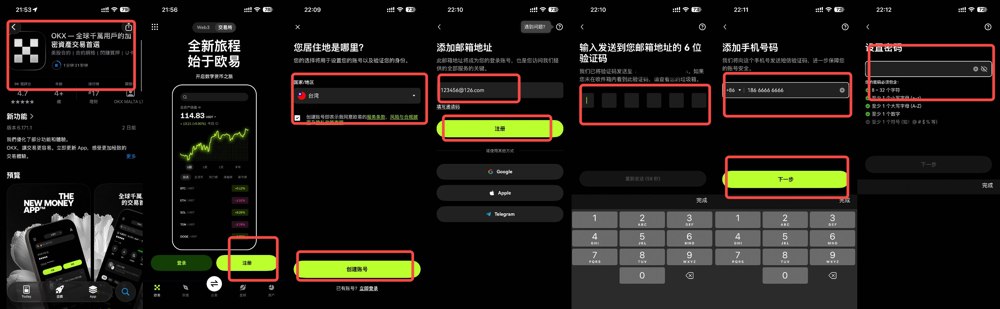
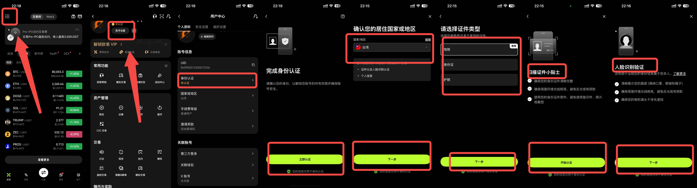
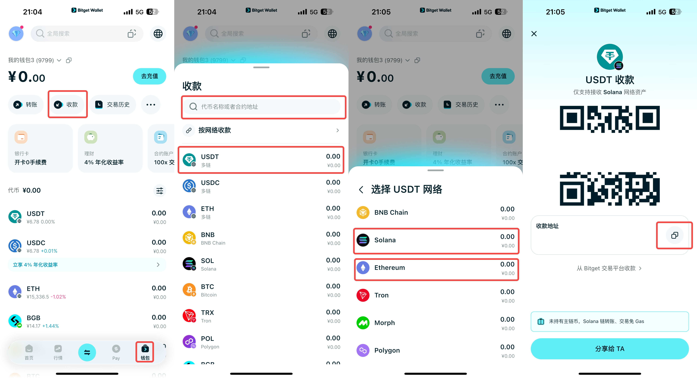
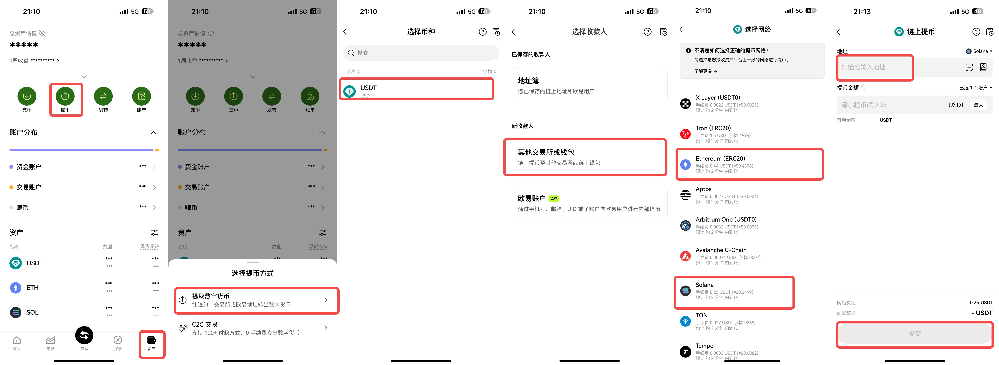

OKX App 注册、入金与提现教程
完成 OKX 注册、KYC、买币入金和提现基础流程。
OKX App 注册 & 入金 & 提现教程
第一步：下载 App 并准备注册
安卓手机 进入邀请链接注册（邀请码 48521826）：https://www.czxrqvgwpkf.org/join/48521826
苹果手机 登陆港区 ID，在 App Store 中检索：OKX 下载
打开 OKX（欧易） App，点击页面上的 “注册或登录”，选择居住地点“创建账号”。
选择注册方式： 支持使用手机号或邮箱注册。
手机号： 支持中国大陆 +86 手机号。
邮箱： 推荐使用海外邮箱（如 Outlook 或 Gmail），国内的 QQ 邮箱和 163 邮箱也可以正常使用。
输入邮箱或手机号后，点击下一步，前往邮箱/手机查收并输入 6 位数字验证码。
设置密码： 密码要求至少 8 个字符，且必须包含至少 1 个数字、1 个大写字母、1 个小写字母和 1 个特殊字符。

第二步：进行身份认证 (KYC)
为了保障资产安全并在后续顺利进行 C2C 买币，注册完成后需要进行基础实名认证：
登录账号后，点击 App 左上角菜单栏，进入 “账号设置” -> “身份认证”。
根据系统提示，上传您的 身份证 正反面照片，并完成 人脸识别 悬浮框验证。
审核通常在 5-10 分钟内完成，通过后即可解锁完整的买币与提币功能。

第三步：从 OKX 提现稳定币到 Bitget Wallet
在钱包首页顶部点击 “收款” 。
在搜索框输入 USDT 并点击它。
关键选择（根据你想走的网络进行匹配）：
方案 A (Solana 链 - 推荐)： 网络选择 Solana。
（特点：速度极快，网络手续费通常不到 1 刀，非常划算）
方案 B (Ethereum 链)： 网络选择 Ethereum (ERC20)。
（特点：生态最成熟，但主网手续费相对较高）
点击 “复制地址”。

第四步：在 OKX 发起链上提币
打开 OKX App，点击右下角 “资产” -> “提币”。
币种选择 USDT，提币方式选择 “提取数字货币”。
选择收款人：“其他交易所或钱包”。
匹配提币网络（必须与钱包选择的网络严格一致，否则资产会丢失）：如果你在钱包里复制的是 Solana 地址，OKX 的提币网络务必选择 USDT-Solana；如果你在钱包里复制的是 Ethereum 地址，OKX 的提币网络务必选择 USDT-ERC20。
粘贴信息： 在地址栏粘贴刚才从 Bitget Wallet 复制的收款地址。
输入提币数量，点击提交并完成密码/验证码确认，等待 2-5 分钟资产即可到账。
